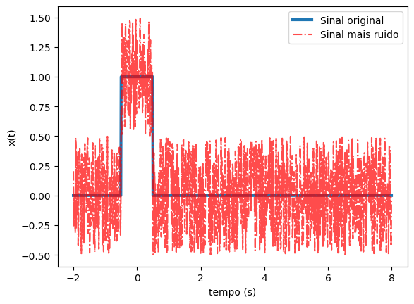
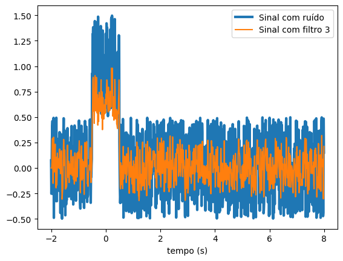
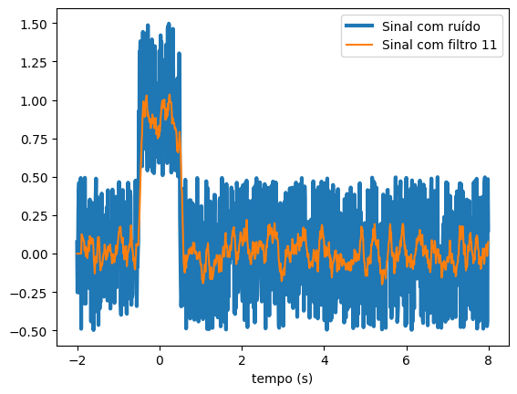
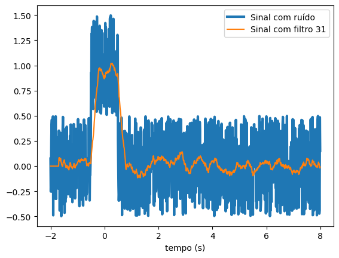
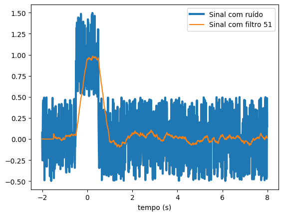

Aula 9 - Filtros FIR - Parte 1#
Versão 2023
Essas notas de aula podem ser compartilhadas nos termos da lincença Creative Commons CC BY-NC-ND 4.0, com propósitos exclusivamente educacionais.
Attribution-NonCommercial-NoDerivatives 4.0 International
FILTROS FIR#
- São os filtros digitais cuja resposta ao impulso é finita.#
\( h[n] \neq 0: n=0,1,\dots,M-1 \)
- Função de Transferência \(\Rightarrow\) somente numerador.#
- A saída depende dos valores passados e presente da entrada.#
- Vantagens principais:#
1. Impõem a Fase Linear,
2. São sempre estáveis (por causa do tamanho finito).
- Desvantagem:#
1. Ordem muito alta.
- Projetos:#
1. por janela,
2. por amostragem em frequência.
1. Toy example#
Filtro de Média Móvel com coeficientes contantes#
Equação:#
\(y[n] = \frac{1}{N}\sum_{k=0}^{N-1}x[n-k] \)
Perguntas:#
1. Essa equação de recorrência se comporta como um filtro?#
2. Qual a sua largura de banda?#
3. O valor de \(N\) interfere na largura de banda?#
Equacionamento#
1. \( y[n] = \frac{1}{N}\sum_{k=0}^{N-1}x[n-k] \)#
2. \( Y(z) = \frac{1}{N}\sum_{k=0}^{N-1} z^{-k}X(z) \to Y(e^{j\omega}) = \frac{1}{N}\sum_{k=0}^{N-1} e^{-j\omega k}X(e^{j\omega}) = \frac{X(e^{j\omega})}{N}\sum_{k=0}^{N-1} e^{-j\omega k} \)#
3. \( H(e^{j\omega}) = \frac{1}{N}\sum_{k=0}^{N-1} e^{-j\omega k} = \frac{1}{N}\frac{1-(e^{-j\omega})^N}{1 - e^{-j\omega}} \)#
4. \( H(e^{j\omega}) = \frac{1}{N}\frac{1-e^{-j\omega N}}{1 - e^{-j\omega}} = \frac{1}{N}\frac{e^{-j\omega N/2}}{e^{-j\omega}}\frac{(e^{j\omega N/2} - e^{-j\omega N/2})}{e^{j\omega/2} - e^{-j\omega/2}}\)#
5. \( H(e^{j\omega}) = \frac{1}{N}\frac{e^{-j\omega N/2}}{e^{-j\omega/2}}\frac{2j\sin(\omega N/2)} {2j\sin(\omega/2)} = \underbrace{e^{-j\omega (N-1)/2}}_{Fase}\underbrace{\frac{\sin(\omega N/2)} {N\sin(\omega/2)}}_{Módulo} \)#
6. \( |H(e^{j\omega})| = \frac{\sin(\omega N/2)} {N\sin(\omega/2)}\)#
7. \( \angle H(e^{j\omega}) = e^{-j\omega (N-1)/2}\)#
7.1 \( \;\;\;\;\;\; \theta(\omega) = -\omega (N-1)/2 \)#
7.2 \( \;\;\;\;\;\; \tau(\omega) = -\frac{d}{d\omega} \angle H(e^{j\omega}) = (N-1)/2 \)#
2. Caso Geral#
Um filtro FIR de ordem \(M-1\) é descrito pela seguinte equação de diferenças:#
\( y[n] = b_0x[n] + b_1x[n-1] + \cdots + b_{M-1}x[n-M+1] \)
\( = \sum_{k=0}^{M-1}b_kx[n-k] \)#
Expressando a saída como a convolução da entrada com a resposta ao impulso \(h[n]\) tem-se:#
\( y[n] = \sum_{k=0}^{M-1}h[k]x[n-k] = \sum_{k=0}^{M-1}b_kx[n-k] \)#
Observações:#
os coeficientes do filtro correspondem à resposta ao impulso do filtro, isto é; \(b_n = h[n]\);
\(h[n]\) tem comprimento \(M\), isto é:
\(h[n] \neq 0 : n = 0,1, \dots, M-1\);
o filtro é sempre estável.
Simulação: Toy Example#
import numpy as np
import matplotlib.pylab as plt
M = [3, 11, 31]
freq = np.arange(0,0.5, 0.001)
for m in M:
H = []
for f in freq:
H.append(np.abs(np.sin(np.pi*f*m)/(m*np.sin(np.pi*f))))
plt.plot(freq, H)
plt.xlabel('digital frequency [0:0.5]')
plt.ylabel('$|H(e^{-j 2\pi f})|$')
plt.show()
/tmp/ipykernel_28985/1899834218.py:10: RuntimeWarning: invalid value encountered in scalar divide
H.append(np.abs(np.sin(np.pi*f*m)/(m*np.sin(np.pi*f))))
t = np.arange(-2, 8, 0.01)
def p(t):
return 1 * (abs(t) < 0.5)
def x(t):
if isinstance(t, np.floating):
return np.random.random()
else:
return np.random.random(len(t))
plt.plot(t, p(t), linewidth=3, label='Sinal original')
plt.plot(t, p(t)+x(t)-0.5, '-.r', alpha = 0.7, label = 'Sinal mais ruido')
plt.xlabel('tempo (s)')
plt.ylabel('x(t)')
plt.legend()
X = list(p(t)+x(t)-0.5)

#X = list(x(t))
M = 3
Y3 = [0] * M
for i in range(M, len(t)):
y = 0
for j in range(0, M-1):
y = y + X[i-j]
Y3.append(y/M)
#X = list(x(t))
M = 11
Y11 = [0] * M
for i in range(M, len(t)):
y = 0
for j in range(0, M-1):
y = y + X[i-j]
Y11.append(y/M)
#X = list(x(t))
M = 31
Y31 = [0] * M
for i in range(M, len(t)):
y = 0
for j in range(0, M-1):
y = y + X[i-j]
Y31.append(y/M)
#X = list(x(t))
M = 51
Y51 = [0] * M
for i in range(M, len(t)):
y = 0
for j in range(0, M-1):
y = y + X[i-j]
Y51.append(y/M)
plt.plot(t, X, linewidth=3, label='Sinal com ruído')
plt.plot(t, Y3, label='Sinal com filtro 3')
plt.xlabel('tempo (s)')
plt.legend()
plt.show()

plt.plot(t, X, linewidth=3, label='Sinal com ruído')
plt.plot(t, Y11, label='Sinal com filtro 11')
plt.xlabel('tempo (s)')
plt.legend()
plt.show()

plt.plot(t, X, linewidth=3, label='Sinal com ruído')
plt.plot(t, Y31, label='Sinal com filtro 31')
plt.xlabel('tempo (s)')
plt.legend()
plt.show()

plt.plot(t, X, linewidth=3, label='Sinal com ruído')
plt.plot(t, Y51, label='Sinal com filtro 51')
plt.xlabel('tempo (s)')
plt.legend()
plt.show()
